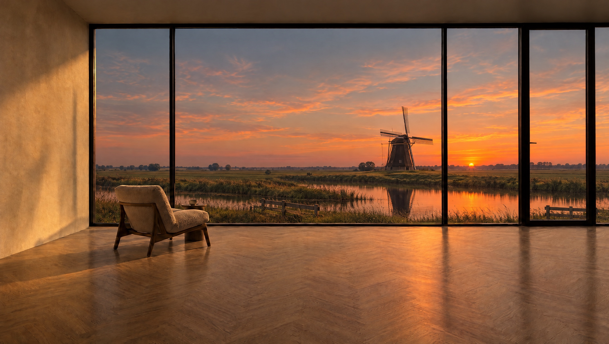
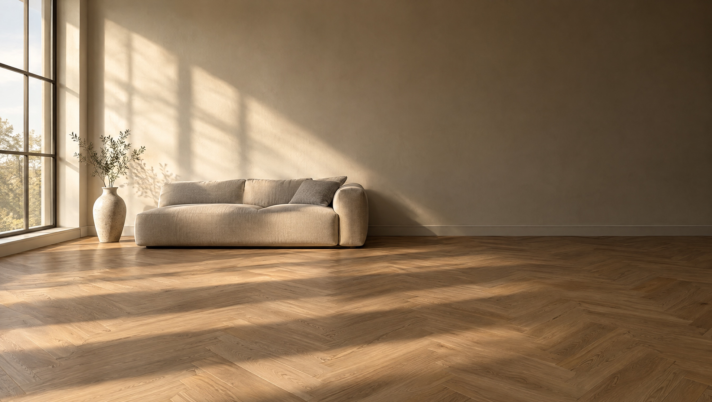

Alles rondom het vakwerk.
Het werksysteem voor vakbedrijven in de bouw. Nu voor vloeren.
Sfeerbeeld
Waar Framr.One voor staat
Jij doet het vakwerk.
Wij regelen alles eromheen.
Vloeren leggen, kozijnen plaatsen, schilderen: dat werk doe jij. Alles ervoor, eromheen en erna wil Framr.One voor je regelen, van de eerste aanvraag tot de betaling. Zodat jij meer tijd overhoudt voor het werk waar je je geld mee verdient.
- Aanvraag
- Inmeting
- Calculatie
- Offerte
- Materiaal
- Planning
- Urenregistratie
- Factuur
- Boekhouding
- Nazorg
Vandaag in het portaalWaar we naartoe werken
Vandaag: het werksysteem.
Klanten, klussen, inmetingen, calculaties, offertes en facturen in een omgeving. Wat je een keer invoert, neemt de volgende stap over.
Kijk rond zonder account


Begonnen met vloeren.
Gebouwd voor elk vak.
De basis is voor ieder vakbedrijf gelijk: je klanten, je klussen, je offertes en je facturen. Wat per vak verschilt, is hoe je inmeet, rekent en bestelt. Dat doet een module, op dezelfde basis.
- VloerenBeschikbaar
- KozijnenIn ontwikkeling
- Meer vakkenVolgen, op dezelfde basis
Wat het kost
Je betaalt niet voor de software.
Wij verdienen aan materiaal.
Framr.One heeft geen abonnement en geen proefperiode die afloopt. Ons verdienmodel zit in het materiaal: Framr.One werkt samen met groothandels, en je bestelt via onze webshop Oaklyn. Daarom willen wij hetzelfde als jij: een kloppende offerte, zo snel mogelijk de deur uit.
- Het werksysteem
- Geen kostenDe basis en elke module, ook de modules die nog komen.
- Materiaal
- Op je partnerprijsJe bestelt via Oaklyn. Op dat materiaal verdienen wij, en jij met je eigen marge.
- Bestellen
- Nooit verplichtHet werksysteem werkt ook met materiaal van elders, of dat je klant zelf aanlevert.

Framr.One Vloeren
Verdien ook aan het materiaal.
Aan je legwerk verdien je al. Met Framr.One Vloeren verdien je ook aan de vloer en aan alles wat je erbij levert.
- Partnerprijs
- Wat jij betaalt bij Oaklyn.
- Jouw prijs
- Wat je klant betaalt, en die bepaal jij. Ons advies: 15 procent onder de adviesprijs, zodat ook je klant goedkoper uit is.
- Jouw marge
- Het verschil, voor jou. Bovenop je legwerk.
- Brons, Zilver en Goud
- Uit het magazijn van JOKA in 2 tot 4 werkdagen
Sfeerbeeld

Begin met je eerste klus.
Een account is je e-mailadres en een wachtwoord. Of kijk eerst rond in het portaal, zonder account.
Liever eerst even praten? 06 11 47 23 85 info@framr.one